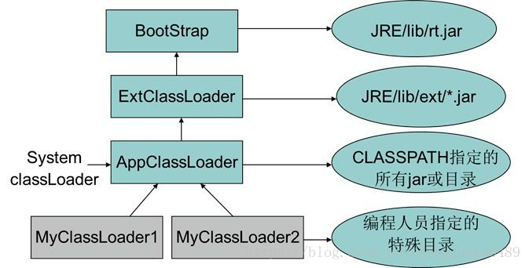
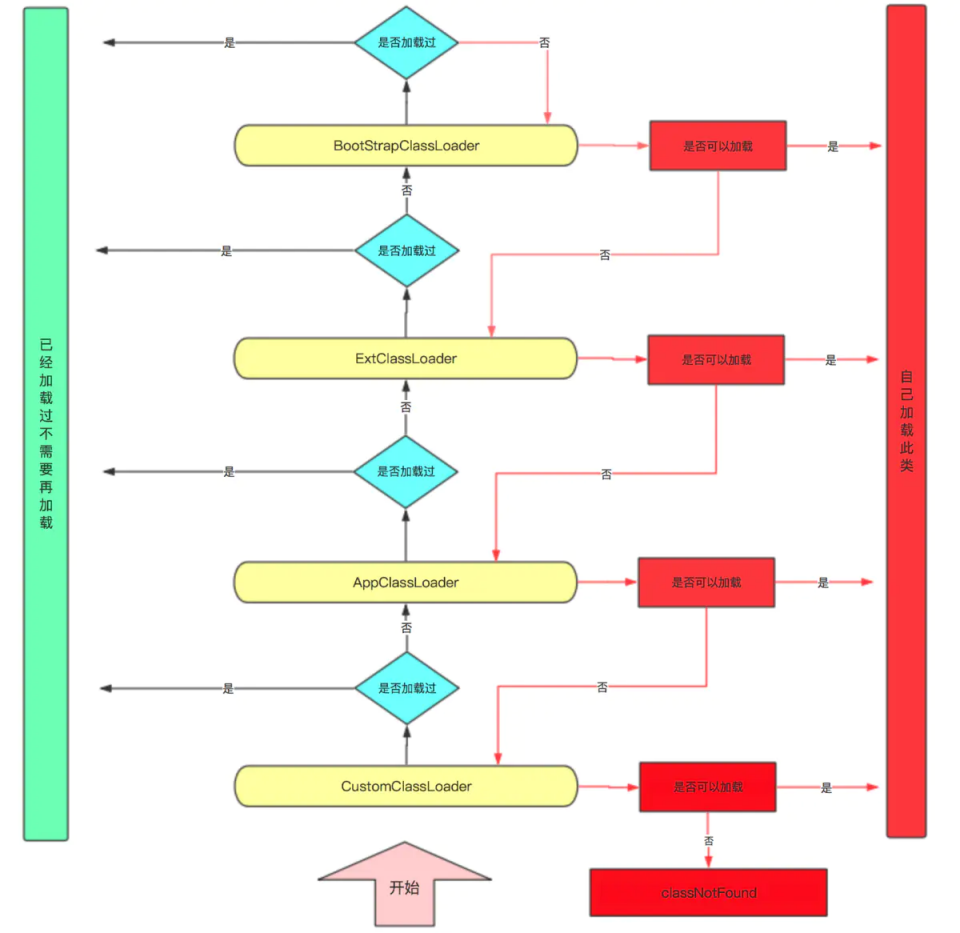

java_基础03双亲委派¶
双亲委派（可以理解为父类委派，parents翻译问题，理解起来有些费解）:当某个类加载器需要加载某个.class文件时，它首先把这个任务委托给他的上级类加载器，递归这个操作，如果上级的类加载器没有加载，自己才会去加载这个类。
类加载器¶
有四种加载器：
最基础：Bootstrap ClassLoader（加载JDK的/lib目录下的类）
次基础：Extension ClassLoader（加载JDK的/lib/ext目录下的类）
普通：Application ClassLoader（程序自己classpath下的类）
自定义：CustomClassLoader（用户自定义类加载器）
其关系如下:

源码分析¶
protected Class<?> loadClass(String name, boolean resolve)throws ClassNotFoundException{
synchronized (getClassLoadingLock(name)) {
// 首先检查这个classsh是否已经加载过了
Class<?> c = findLoadedClass(name);
if (c == null) {
long t0 = System.nanoTime();
try {
// c==null表示没有加载，如果有父类的加载器则让父类加载器加载
if (parent != null) {
c = parent.loadClass(name, false);
} else {
//如果父类的加载器为空 则说明递归到bootStrapClassloader了
//bootStrapClassloader比较特殊无法通过get获取
c = findBootstrapClassOrNull(name);
}
} catch (ClassNotFoundException e) {}
if (c == null) {
//如果bootstrapClassLoader 仍然没有加载过，则递归回来，尝试自己去加载class
long t1 = System.nanoTime();
c = findClass(name);
sun.misc.PerfCounter.getParentDelegationTime().addTime(t1 - t0);
sun.misc.PerfCounter.getFindClassTime().addElapsedTimeFrom(t1);
sun.misc.PerfCounter.getFindClasses().increment();
}
}
if (resolve) {
resolveClass(c);
}
return c;
}
}
流程图

双亲委派机制的作用¶
提高效率：防止重复加载同一个.class。通过委托去向上面问一问，加载过了，就不用再加载一遍。
保证安全性：保证核心.class不能被篡改。通过委托方式，不会去篡改核心.clas，即使篡改也不会去加载，即使加载也不会是同一个.class对象了。不同的加载器加载同一个.class也不是同一个Class对象。这样保证了Class执行安全。
打破双亲委派¶
双亲委派模型很好地解决了各个类加载器的基础类统一问题(越基础的类由越上层的加载器进行加载)，基础类之所以被称为“基础”，是因为它们总是作为被调用代码调用的API。但是，如果基础类又要调用用户的代码，那该怎么办呢？
这并非是不可能的事情，一个典型的例子便是JNDI服务，JNDI现在已经是Java的标准服务，它的代码由启动类加载器去加载(在JDK1.3时放进rt.jar)，但JNDI的目的就是对资源进行集中管理和查找，它需要调用独立厂商实现部部署在应用程序的classpath下的JNDI接口提供者(SPI, Service Provider Interface)的代码，但启动类加载器不可能“认识”这些代码，该怎么办？
为了解决这个困境，Java设计团队只好引入了一个不太优雅的设计：线程上下文件类加载器(Thread Context ClassLoader)。这个类加载器可以通过java.lang.Thread类的setContextClassLoader()方法进行设置，如果创建线程时还未设置，它将会从父线程中继承一个；如果在应用程序的全局范围内都没有设置过，那么这个类加载器默认就是应用程序类加载器。有了线程上下文类加载器，JNDI服务使用这个线程上下文类加载器去加载所需要的SPI代码，也就是父类加载器请求子类加载器去完成类加载动作，这种行为实际上就是打通了双亲委派模型的层次结构来逆向使用类加载器，已经违背了双亲委派模型，但这也是无可奈何的事情。Java中所有涉及SPI的加载动作基本上都采用这种方式，例如JNDI,JDBC,JCE,JAXB和JBI等。
还有些是由于用户对程序的动态性的追求导致的，例如OSGi的出现。在OSGi环境下，类加载器不再是双亲委派模型中的树状结构，而是进一步发展为网状结构。
其他¶
Class.forName()和ClassLoader.loadClass()的区别¶
Class.forName(className)
内部实际调用的方法是? Class.forName(className,true,classloader);第2个boolean参数表示类是否需要初始化，?Class.forName(className)默认是需要初始化。一旦初始化，就会触发目标对象的 static块代码执行，static参数也也会被再次初始化。
ClassLoader.loadClass(className)
内部实际调用的方法是? ClassLoader.loadClass(className,false);第2个 boolean参数，表示目标对象是否进行链接，false表示不进行链接，由上面介绍可以，不进行链接意味着不进行包括初始化等一些列步骤，那么静态块和静态对象就不会得到执行
参考¶
Java 中的双亲委派的“双”怎么理解 ？：https://www.zhihu.com/question/288949359?sort=created
阿里面试：什么地方违反了双亲委派模型：https://www.sohu.com/a/334000357_505800
JVM成神之路-类加载机制-双亲委派，破坏双亲委派：https://blog.csdn.net/w372426096/article/details/81901482
通俗易懂的双亲委派机制：https://blog.csdn.net/codeyanbao/article/details/82875064